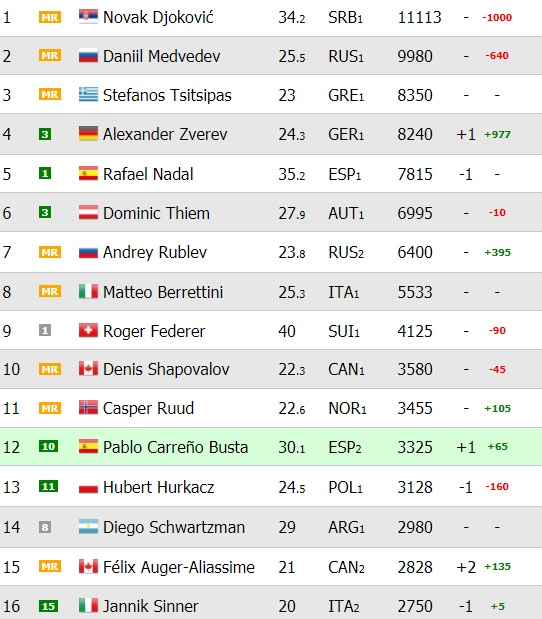
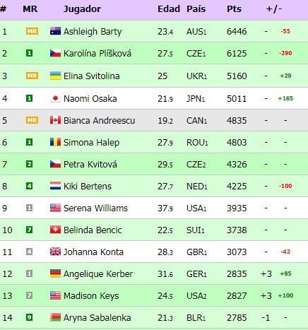
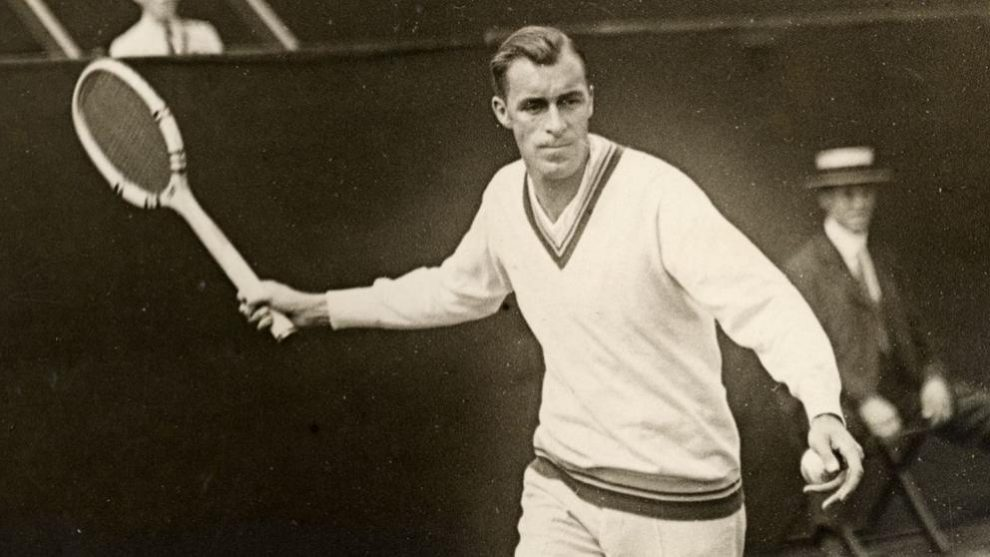
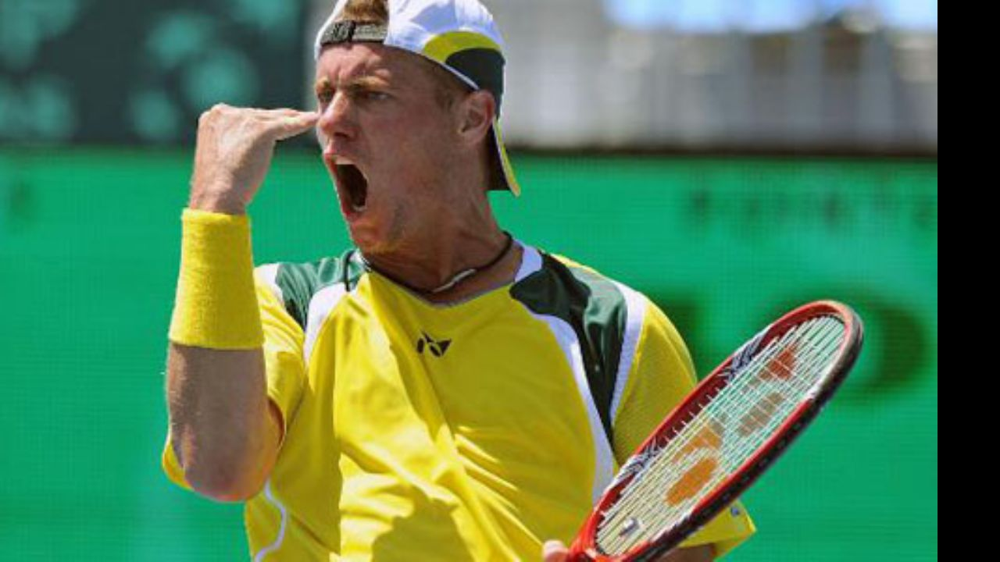
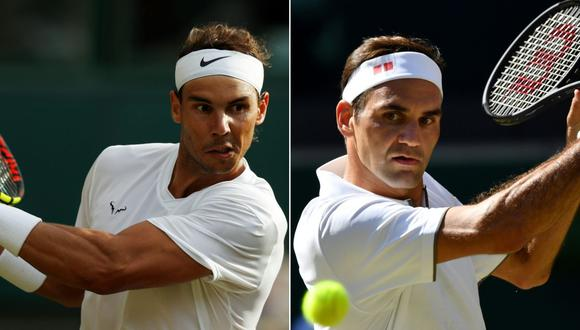
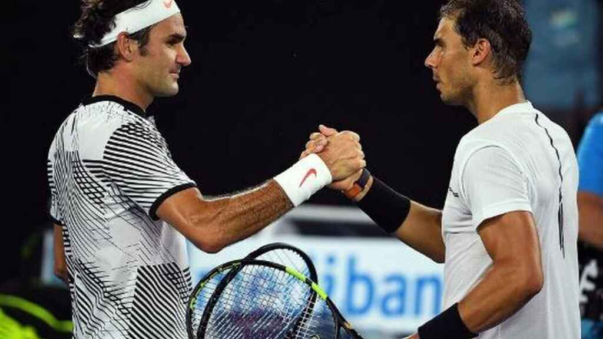

En Todo Tenis conocerás todo sobre éste maravilloso deporte, los records más sorprendentes, las últimas noticias, y te divertiras viendo espectaculares jugadas, además aprenderas sobre los inicios e historia del tenis, considerado uno de los deportes más populares del mundo.
Ranking ATP Hombres

Ranking ATP Mujeres

Un poco de Historia
Tuvo sus orígenes en Inglaterra; aunque también se apunta como su posible origen al norte de Francia en el siglo XII. La discrepancia principal radica en que, durante tal siglo la pelota era golpeada con la mano, en lugar de una raqueta, por lo que recibía el nombre de juego de palma. No fue hasta principios del siglo XVI que se comenzó a utilizar una raqueta de madera en lugar de las manos>, entonces recibió el nombre de tenis.

En 1968, las presiones comerciales y los rumores de que algunos amateurs recibían dinero a escondidas, llevaron al abandono de la distinción entre jugadores profesionales y aficionados, inaugurando la Era Abierta, en la que todos los jugadores podían competir en todos los torneos, y los mejores consiguieron vivir del tenis. Con el comienzo de la Era Abierta, el establecimiento de un circuito internacional de tenis profesional y los ingresos provenientes de la venta de derechos de televisación, la popularidad del tenis se ha extendido por todo el mundo>

La rivalidad más apasionante de la era abierta
Roger Federer y Rafael Nadal son dos tenistas profesionales que, según muchos críticos deportivos, poseen la mayor rivalidad deportiva registrada en el mundo del tenis

Ambos mantuvieron los dos principales puestos del ranking del ATP Tour desde julio de 2005 hasta agosto de 2011, y son el único dúo de hombres que haya acabado cinco años consecutivos en la cima del ranking.
Durante tres años consecutivos, 2006–2008, se disputaron las finales tanto de Roland Garros como de Wimbledon. Luego, en 2009, se enfrentaron en la final del Abierto de Australia; el encuentro de Wimbledon 2008 ha sido aclamado como el mejor partido de tenis de la historia por muchos experimentados analistas de tenis.

Roger Federer y Rafael Nadal se han enfrentado en 40 ocasiones, con 24 victorias para Nadal y 16 para Federer, en finales de Grand Slam se han vistos las caras en 9 ocasiones con registro favorable a Nadal por 6-3, en las superficies; en cancha dura lidera Federer 11-9, en polvo de ladrillo Nadal gana por 15-2 y en césped Federer lidera por 3-1.